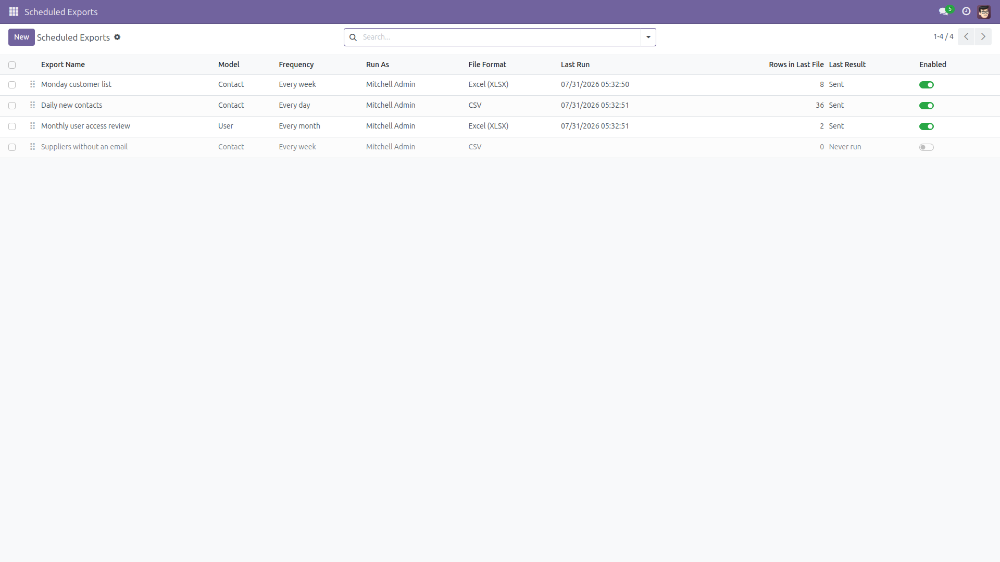
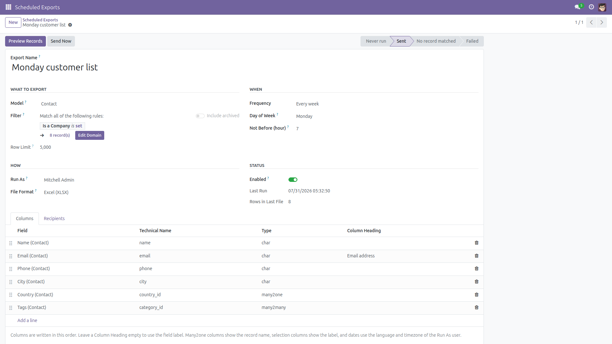
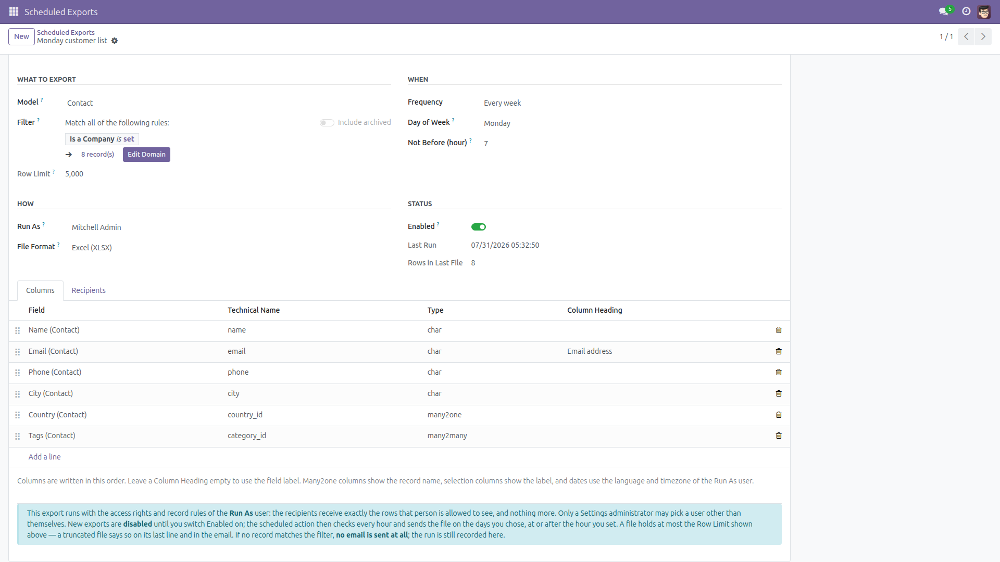
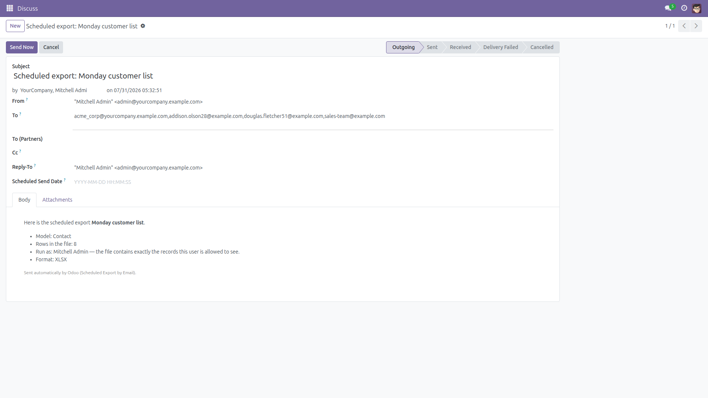
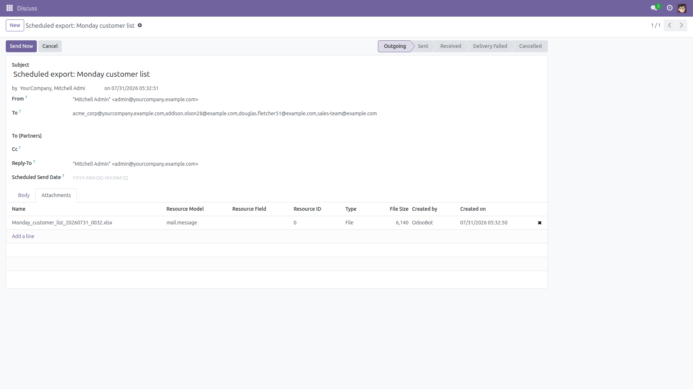
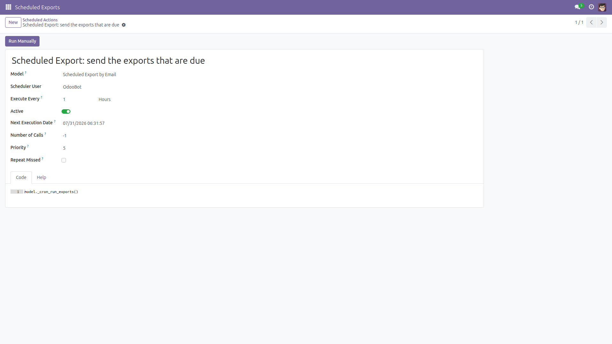

Scheduled Export by Email
The list somebody exports and mails every Monday — sent automatically instead.
Every business has that one person who opens the same list every Monday morning, exports it, and emails it to a colleague. Five minutes of clicking, forgotten the week they are on holiday, and Odoo has no built-in way to automate it.
This module adds Scheduled Exports: pick a model, an optional filter, the columns you want, a schedule and the recipients. An hourly scheduled action builds the file and mails it as an attachment.
Free and open source (LGPL-3), Odoo 14.0 through 19.0.
- Any model, any filter — contacts, sales orders, tasks, your own models. The filter is the standard Odoo domain editor, so anything you can search you can schedule.
- The columns you choose, in the order you choose — drag the lines to reorder, and rename a column heading when the technical field label is not what the recipient expects.
- Daily, weekly or monthly — plus the hour it should not go out before, read in the timezone of the user the export runs as. A "31st of the month" export still goes out in February.
- CSV always, Excel when the server can — XLSX is produced when the
xlsxwriter library is installed. When it is not, the file is sent as CSV and the email says so, instead of the export quietly failing.
- Readable values, not raw ids — many2one columns show the record name, selection columns show the label, tags are joined by name, booleans read Yes/No, and dates use the language and timezone of the Run As user.
It runs as a person, not as the system. Every export names a Run As user and reads the records with that person's access rights and record rules — there is no sudo() anywhere on that path. The recipients therefore receive exactly the rows that user is allowed to see, and nothing more. An export can never run as the superuser, and only a Settings administrator may point an export at somebody other than themselves.
Built to be predictable.
New exports are disabled until you switch them on;
a file holds at most 5000 rows, and a truncated file says so on its last line as well as in the email;
an export that matches no record sends no email at all, so nobody gets a daily empty file — the run is still recorded on the export;
each export runs in its own savepoint, so one broken export never stops the others, and its error is shown on the record;
and text that a spreadsheet would run as a formula is neutralised before it reaches the recipient.
Screenshots

All the scheduled exports in one list: model, frequency, who they run as, the format, and what the last run did.

One export: the model and its filter, the schedule, the user it runs as and the file format.

The columns of the file, in order, with an optional heading of your own.

The email itself: how many rows the file holds, which user it was read as, and in which format.

And the file itself, attached and on its way — here the Excel workbook of the Monday customer list.

One hourly scheduled action decides which exports are due. Change its frequency, or disable it, like any other cron.
Installation
- Open Apps, search for Scheduled Export by Email and click Install.
- Only the standard
base and mail modules are required.
- Installing creates one scheduled action, Scheduled Export: send the exports that are due, which runs every hour. It has nothing to do until you create an export and enable it.
- For Excel files, make sure the Python library
xlsxwriter is installed on the server (pip install XlsxWriter). It ships with most Odoo installations. Without it, exports set to Excel are sent as CSV and the email explains why.
- Check that outgoing email works (Settings → Technical → Outgoing Mail Servers) — the module hands the file to Odoo's normal mail queue.
Configuration
- The menu Scheduled Exports is visible to users in the Administration → Access Rights group. Choosing a model and its columns means reading Odoo's technical field list, which Odoo itself reserves to that group — so exports are configured by administrators, not by every employee.
- Click New and name the export, for example Monday customer list.
- Pick the Model, then build a Filter with the standard domain editor. Leave it empty to export everything the Run As user can see.
- On the Columns tab, add one line per column. Drag the handles to reorder; type a Column Heading to override the field label. File (binary) fields cannot be exported.
- Choose the Frequency — every day, every week on a chosen weekday, or every month on a chosen day — and the hour the file should not go out before.
- Set Run As. It defaults to you. Only a Settings administrator may choose somebody else; portal, archived and superuser accounts are refused.
- On the Recipients tab, add the contacts who should receive the file, and any extra addresses that are not contacts in Odoo.
- Pick the File Format: CSV or Excel (XLSX).
Usage
- Click Preview Records to open exactly the records the export currently matches. Nothing is sent and nothing is changed.
- Click Send Now to build the file and email it immediately — the honest way to check what recipients will actually receive.
- Happy with it? Switch Enabled on. The hourly scheduled action takes over from there.
- Come back any time: Last Run, Rows in Last File and Last Result tell you what happened. A failed export shows its error on the record and is retried on its next scheduled slot.
- To pause an export, switch Enabled off; to retire it, archive or delete it.
Good to know (limitations)
- The scheduled action runs hourly, so an export goes out at the first check at or after the hour you set — not to the minute.
- A file holds at most 5000 rows. Beyond that the file is truncated and both the last line of the file and the email say how many records matched in total. Narrow the filter to get everything.
- An export that matches no record sends no email. This is deliberate; the run is recorded on the export as No record matched.
- File (binary) fields cannot be exported — they are not offered as columns.
- The generated file is attached to the outgoing email and removed from Odoo once the email has been sent. It is not archived inside Odoo.
- In a multi-company database the export sees the companies allowed for the Run As user.
- Email is not encrypted end to end: anyone with access to a recipient's mailbox can read the file. Choose the Run As user and the recipients accordingly.
Version notes
Identical behaviour on every supported series (14.0 – 19.0). The scheduled action is configured per series so it keeps running instead of firing once.
License: LGPL-3 · Source on GitHub · Issues and contributions welcome.